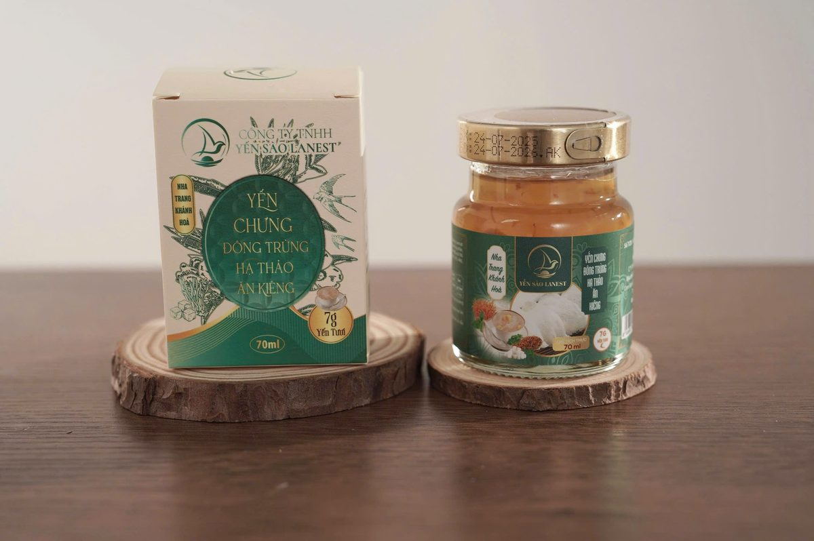
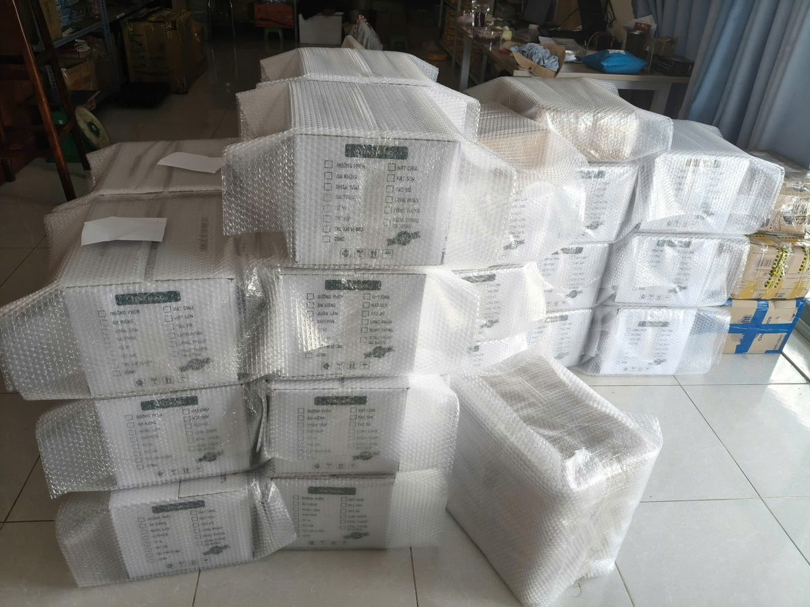

Cách Tư Vấn Khách Mua Yến: 7 Câu Khách Hay Nói Và Cách Đại Lý Trả Lời
Yến Sào Lanest · Đăng ngày 24/11/2026

Nhập hàng về rồi, phần khó nhất của đại lý là đứng trước khách lẻ. Khách chê đắt, khách sợ hàng giả, khách nói "để suy nghĩ" rồi đi luôn. Bài này gom lại cách tư vấn khách mua yến mà đội kinh doanh Lanest đang dùng mỗi ngày, viết lại cho đại lý dễ áp dụng. Không có câu thần chú nào chốt được mọi khách, nhưng có cách trả lời để khách tin mình và quay lại.
Hũ yến chưng đông trùng hạ thảo ăn kiêng cạnh hộp lẻ, nhãn ghi rõ 7g yến tươi, 70ml
1. Nguyên tắc trước khi trả lời: nghe hết, rồi mới nói
Đội kinh doanh Lanest học thuộc một công thức bốn bước, gọi tắt là L.E.A.D:
- Lắng nghe: nghe hết ý khách, không ngắt lời.
- Đồng cảm: cho khách thấy mình hiểu điều họ lo.
- Trả lời đúng: chỉ nói thông tin chính xác, không phóng đại, không hứa quá mức.
- Định hướng bước tiếp: gửi tài liệu, hẹn lại, mời dùng thử, hoặc đơn giản là giữ liên lạc.
Và một câu Lanest dặn nhau: "Đừng cố thắng trong cuộc tranh luận. Hãy cố thắng bằng sự tin tưởng." Mục tiêu không phải chốt bằng mọi giá, mà là để khách quay lại và giới thiệu thêm người khác.
2. "Giá bên em cao quá" và "bên kia rẻ hơn"
Đây là câu gặp nhiều nhất. Đừng vội giảm giá. Hãy hỏi lại nhẹ nhàng: anh chị đang băn khoăn về số tiền, hay chưa thấy hai sản phẩm khác nhau ở đâu? Rồi mời khách so trên cùng tiêu chí:
- Lượng yến ghi trên nhãn: hũ ghi bao nhiêu gram, là yến tươi hay tổ yến khô. Một hũ 7g yến tươi khác hẳn một hũ 1,5g tổ yến (tương đương khoảng 15g yến tươi).
- Thành phần: có phụ gia gì, có ghi đủ trên nhãn không.
- Nguồn gốc và giấy tờ: số tự công bố, mã vạch, phiếu kiểm nghiệm.
Khi khách tự so, họ thường hiểu vì sao giá khác. Bài cách đọc nhãn yến hũ là tài liệu tốt để gửi kèm.
Có khách sẽ xin "bớt chút cho em". Lanest áp dụng giá thống nhất để giữ quyền lợi cho cả khách lẫn hệ thống đại lý, nên câu trả lời đúng là: nếu đang có chương trình ưu đãi chính thức, mình báo đầy đủ cho khách.
3. "Tôi sợ hàng giả"
Khi tìm hiểu nhóm khách mua yến biếu ba mẹ, Lanest nhận ra một điều: nhiều khách miệng nói "giá cao", nhưng thứ họ sợ thật là mua phải đồ dỏm cho người thân. Giảm giá không gỡ được nỗi sợ này. Thứ gỡ được là bằng chứng:
- Chỉ cho khách xem số tự công bố và lượng yến in trên nhãn.
- Có sẵn phiếu kiểm nghiệm của sản phẩm để gửi khi khách hỏi.
- Khuyên khách mua ở kênh chính thức hoặc đại lý được ủy quyền, để đúng nguồn gốc và được hỗ trợ sau bán.
Hàng trôi nổi không giấy tờ, không mã vạch, dân trong nghề gọi là "tem chung", là thứ đại lý không nên đem ra trả lời câu hỏi này. Bài tiêu chí chọn hàng yến sào chất lượng nói kỹ hơn những giấy tờ nên có.

Thùng yến hũ bọc xốp hơi xếp chờ giao, mặt thùng có ô đánh dấu từng vị
4. "Tôi sợ không hiệu quả" và "từng dùng mà không thấy gì"
Câu này dễ làm người bán lỡ lời. Đừng hứa yến chữa được bệnh gì. Lanest nói thẳng với khách: Lanest không cam kết hiệu quả điều trị, chỉ cam kết chất lượng sản phẩm. Cảm nhận mỗi người khác nhau, còn tùy ăn uống, nghỉ ngơi và sức khỏe.
Với khách nói "dùng rồi không thấy gì", hãy hỏi lại đã dùng bao lâu, mấy lần một tuần. Người lớn thường dùng khoảng 2–3 lần mỗi tuần, đều đặn thì tốt hơn uống dồn rồi bỏ. Với người đang điều trị bệnh, đang dùng thuốc hay đang mang thai, câu đúng nhất đại lý nên nói là: hỏi bác sĩ trước khi dùng thường xuyên. Bài uống yến hũ mỗi ngày có tốt không có đủ ý để gửi khách.
5. "Tôi không thích vị này"
Hỏi cụ thể: quá ngọt, quá nhạt, hay không hợp mùi? Từ đó gợi ý vị khác. Lanest có 14 vị yến hũ 7g và 3 vị nguyên chất, nên gần như luôn có vị để đổi:
- Thích vị yến nguyên bản, không mùi thảo mộc: đường phèn.
- Thích vị thanh, nhẹ: hạt sen.
- Cần hạn chế đường: hai vị dùng đường isomalt.
- Thích đổi mới: saffron, hạt chia, nhân sâm.
Đại lý cũng nên biết những góp ý thật mà Lanest từng nhận trong khảo sát: có khách thấy vị táo đỏ đặc, vị gừng hơi nồng. Nói trước điều này với khách mới là cách tư vấn trung thực, khách sẽ nhớ mình. Bảng gợi ý đủ 14 vị ở bài 14 vị yến chưng, chọn vị nào.
6. "Để tôi suy nghĩ", "phải hỏi vợ/chồng", "để mua sau"
Đây không phải lời từ chối, mà là khách chưa đủ thông tin hoặc chưa đúng lúc. Cách làm của Lanest:
- Hỏi một câu: anh chị cần thêm thời gian, hay còn điều gì chưa yên tâm?
- Gửi thông tin ngắn gọn qua tin nhắn để cả nhà cùng xem.
- Xin phép lưu thông tin, liên hệ lại vào lúc phù hợp, không gọi dồn.
Với khách "đang dùng hãng khác", tôn trọng lựa chọn của họ và chỉ xin một cơ hội để khách thử. Với khách "không tin yến", đừng cố đổi suy nghĩ của họ ngay hôm đó.
Câu hỏi thường gặp
Đại lý mới chưa quen tư vấn thì Lanest có hỗ trợ không?
Có. Ngoài sản phẩm, Lanest hỗ trợ đại lý nội dung truyền thông, đào tạo tư vấn và chăm sóc sau bán, có nhân sự phụ trách hỗ trợ đại lý. Muốn tìm hiểu thêm, xem bài nguyên tắc hợp tác đại lý Lanest.
Khách hỏi yến có chữa được bệnh không thì trả lời sao?
Yến là thực phẩm, không phải thuốc và không thay thế thuốc chữa bệnh. Người đang điều trị nên hỏi bác sĩ trước khi dùng thường xuyên.
Khách hỏi phiếu kiểm nghiệm thì lấy ở đâu?
Đại lý liên hệ hotline 0258 6278 627, nói rõ sản phẩm khách đang hỏi để được gửi đúng giấy tờ của sản phẩm đó.